Equation inventory
61 numbered equations and31 supplemental unnumbered groups. A = essential to our audit/integration; B = conditional method; C = background or specialized implementation. The original page image is authoritative. LaTeX is a readable transcription; disputed formulas are deliberately retained and flagged, rather than silently repaired.
Priority CEq 2.1: Archimedean buoyant force
PDF 25 · printed 11 · N
F_b=\rho_0 gV
Attribution: Textbook physics, cited Greif [13]
Use / caution: Background only; use integrated loop buoyancy in our solver.
Original PDF equation context
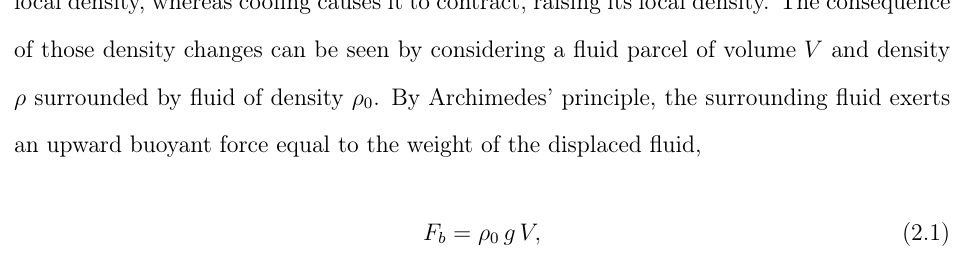
Eq 2.2: Net parcel force
PDF 25 · printed 11 · N
F_{net}=(\rho_0-\rho)gVAttribution: Textbook physics, cited Greif [13]
Use / caution: Does not by itself prescribe net loop circulation.
Original PDF equation context
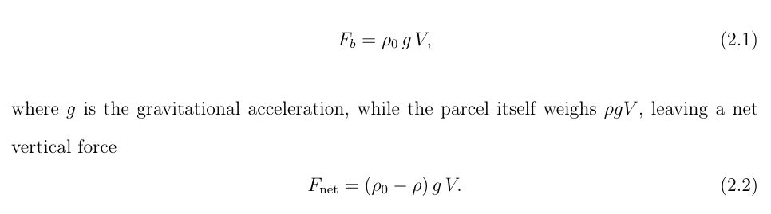
Eq 2.3: Density linearization
PDF 25 · printed 11 · kg/m^3
\rho(T)\approx\rho_0+(\partial\rho/\partial T)_p(T-T_0)
Attribution: Established approximation, cited [14,15]
Use / caution: Local linearization; do not impose constant other properties without a sensitivity check.
Original PDF equation context
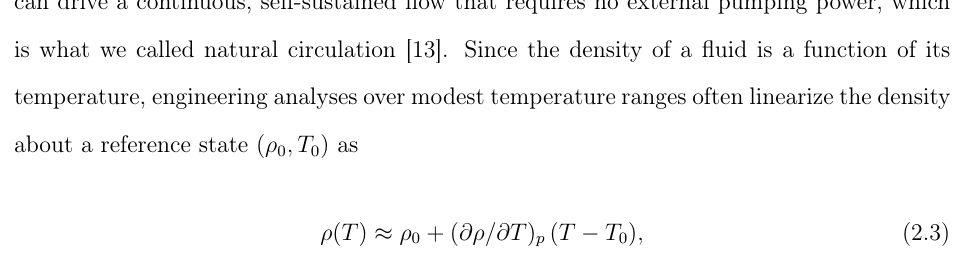
Eq 2.4: Boussinesq density relation
PDF 25 · printed 11 · kg/m^3
\rho(T)\approx\rho_0[1-\beta(T-T_0)]
Attribution: Established approximation, cited [14,15]
Use / caution: Our model already retains temperature-dependent properties; no replacement proposed.
Original PDF equation context
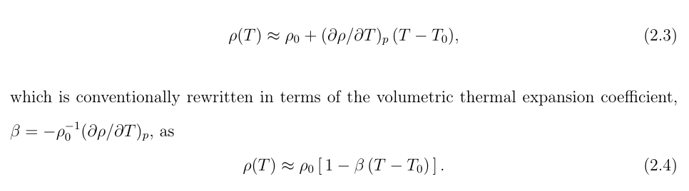
Eq 3.1: Discretization expansion
PDF 36 · printed 22 · Units of QoI
\phi(h)=\phi_{exact}+g_p h^p+O(h^{p+1})Attribution: Richardson/Roache/Celik [12,37,39]
Use / caution: Asymptotic assumption, not guaranteed by a good fit.
Original PDF equation context
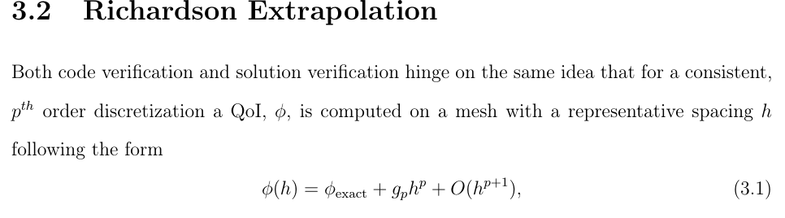
Eq 3.2: Mesh differences
PDF 36 · printed 22 · Units of QoI
\epsilon_{21}=\phi_2-\phi_1,\quad\epsilon_{32}=\phi_3-\phi_2Attribution: Established verification method [12,37]
Use / caution: Three settled solutions of the same QoI and physical problem required.
Original PDF equation context
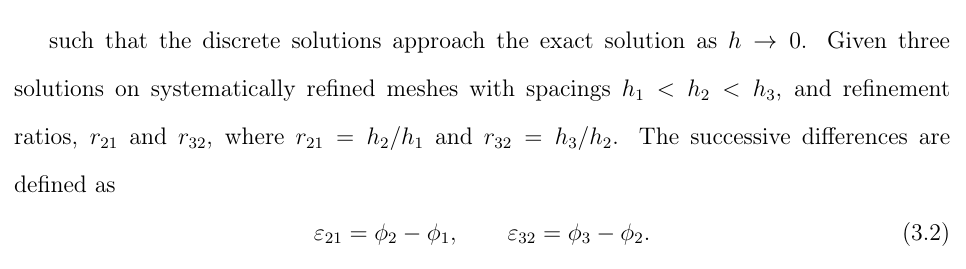
Eq 3.3: Observed order, unequal ratios
PDF 36 · printed 22 · dimensionless
p_{obs}=\frac{1}{\ln r_{21}}\left\lvert\ln\left\lvert\frac{\epsilon_{32}}{\epsilon_{21}}\right\rvert+q(p_{obs})\right\rvertAttribution: Celik procedure [12]
Use / caution: Implicit solve; guard zero differences, nonconvergence and non-asymptotic behavior.
Original PDF equation context
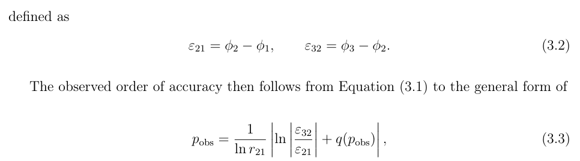
Eq 3.4: Unequal-ratio correction
PDF 36 · printed 22 · dimensionless
q(p)=\ln\left(\frac{r_{21}^{p}-s}{r_{32}^{p}-s}\right),\quad s=\mathrm{sign}(\epsilon_{32}/\epsilon_{21})Attribution: Celik procedure [12]
Use / caution: Use realized h ratios, not nominal cell targets.
Original PDF equation context
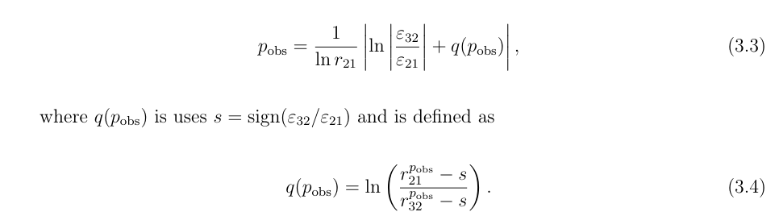
Eq 3.5: Equal-ratio observed order
PDF 37 · printed 23 · dimensionless
p_{obs}=\ln\left\lvert\epsilon_{32}/\epsilon_{21}\right\rvert/\ln rAttribution: Richardson/Celik [12,37]
Use / caution: Requires equal ratios and a valid convergence regime; no observed order from two grids.
Original PDF equation context
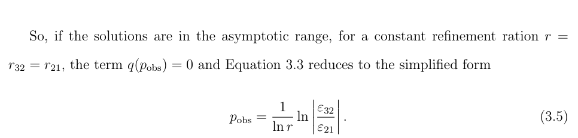
Eq 3.6: Richardson extrapolation
PDF 37 · printed 23 · Units of QoI
\phi_{ext}=\frac{r^{p_{obs}}\phi_1-\phi_2}{r^{p_{obs}}-1}Attribution: Established method [12,37]
Use / caution: Thesis calls estimate phi_exact; it is an extrapolated estimate, not known exact truth.
Original PDF equation context
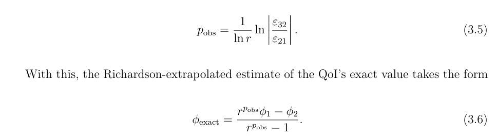
Eq 3.7: Grid Convergence Index
PDF 37 · printed 23 · fraction; multiply by 100 for percent
GCI_{fine}=\frac{F_s e_a^{21}}{r_{21}^{p_{obs}}-1}Attribution: Roache/Celik [12,37]
Use / caution: Three-grid Fs=1.25, two-grid Fs=3 as reported; assumed p must be documented for two-grid use.
Original PDF equation context
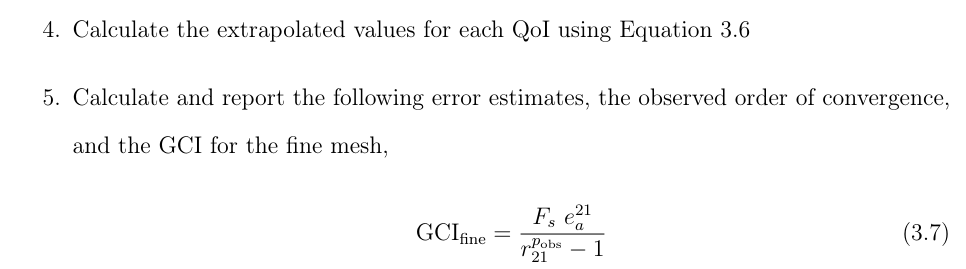
Eq 3.8: Approximate relative error as printed
PDF 38 · printed 24 · dimensionless
e_a^{21}=\left\lvert(\phi_1^{12}-\phi_2)/\phi_1^{12}\right\rvertAttribution: Celik intended; unusual superscript in source
Use / caution: Source visibly prints phi_1 superscript 12. Intended standard form is abs((phi1-phi2)/phi1); do not propagate undefined superscript into code.
Original PDF equation context
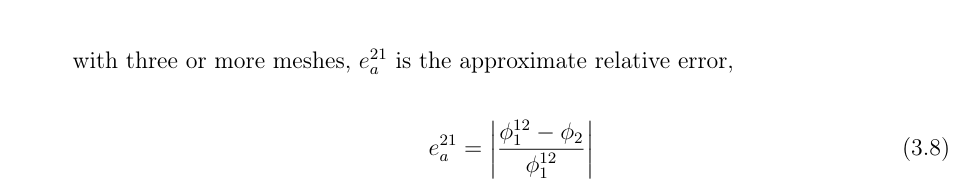
Eq 3.9: Extrapolated relative error
PDF 38 · printed 24 · dimensionless
e_{ext}^{21}=\left\lvert(\phi_{ext}^{12}-\phi_1)/\phi_{ext}^{12}\right\rvertAttribution: Established method [12,37]
Use / caution: Superscript 12 labels pair-based extrapolation; define it explicitly.
Original PDF equation context
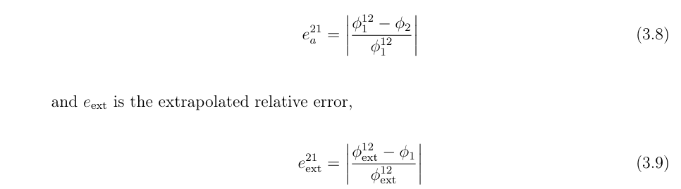
Eq 3.10: Asymptotic ratio
PDF 38 · printed 24 · dimensionless
AR=GCI_{coarse}/(r_{21}^{p_{obs}}GCI_{fine})\approx1Attribution: Established method [12,37]
Use / caution: Consistent triplet and normalization needed; AR near 1 alone is not sufficient verification.
Original PDF equation context
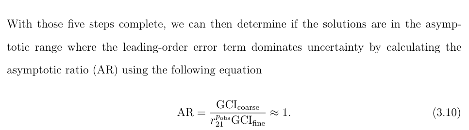
Eq 3.11: Representative 3D cell size
PDF 39 · printed 25 · m
h=\left[\frac{1}{N}\sum_{i=1}^{N}\Delta V_i\right]^{1/3}Attribution: Celik procedure [12]
Use / caution: Record geometry/volume changes across meshes; h=(V/N)^(1/3).
Original PDF equation context
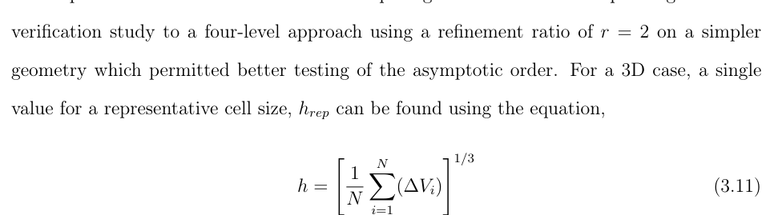
Eq 3.12: Cylindrical verification circuit
PDF 43 · printed 29 · W
Q=\frac{T_\infty-T_{b,in}}{1/(h_s2\pi r_0L)+\ln(r_1/r_0)/(k_{ss}2\pi L)+\ln(r_2/r_1)/(k_{ins}2\pi L)+1/(h_\infty2\pi r_2L)}Attribution: Classical resistance network; Ethan applies it
Use / caution: Negative for heat leaving hot fluid under Ethan's convention; our outward-positive ledger reverses numerator.
Original PDF equation context
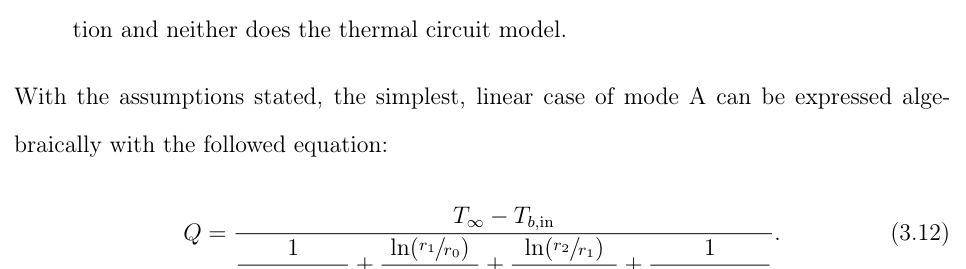
Eq 3.13: Thermally developing laminar tube
PDF 43 · printed 29 · dimensionless
\overline{Nu}_D=\frac{3.657}{\tanh(2.264Gz^{-1/3}+1.7Gz^{-2/3})}+0.0499Gz\tanh(Gz^{-1})Attribution: Sellars/Tribus/Klein via Lienhard [45,20]
Use / caution: Constant-wall-temperature, hydrodynamically developed straight-tube reference. Gz=Re Pr D/L. At Gz=3554 gives 23.7336, not appendix 26.67. Not a universal loop correlation.
Original PDF equation context
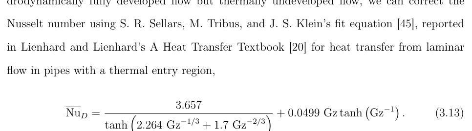
Eq 3.14: Validation comparison error
PDF 44 · printed 30 · Same units for S,D
E=S-D
Attribution: ASME V&V 20 [40]
Use / caution: Use observation-matched outputs; signed error is not model uncertainty.
Original PDF equation context
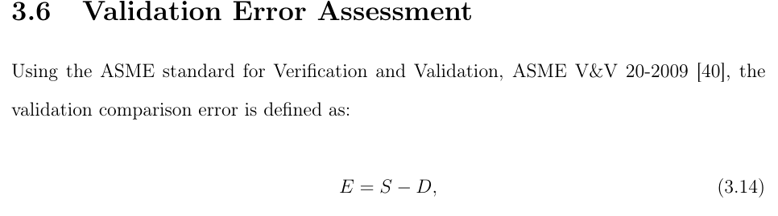
Eq 3.15: Combined validation uncertainty
PDF 44 · printed 30 · Units of QoI
u_{val}=\sqrt{u_{num}^2+u_{input}^2+u_D^2}Attribution: ASME framework [40]
Use / caution: RSS assumes commensurate uncertainty components and appropriate independence/covariance treatment. Not automatically a 99% interval.
Original PDF equation context
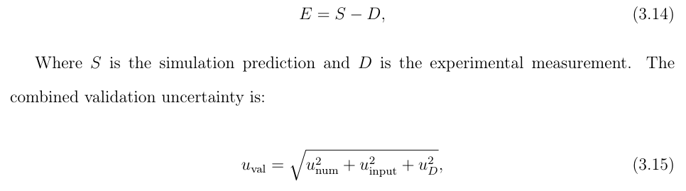
Eq 3.16: Velocity/temperature RMSE
PDF 45 · printed 31 · m/s for velocity; K for temperature
L_2=\sqrt{\frac{1}{N}\sum_{i=1}^{N}(S_i-D_i)^2}Attribution: Standard statistic; Ethan's application
Use / caution: This is RMS error, not unnormalized Euclidean L2 norm. Match sampling points and disclose normalization of percent error.
Original PDF equation context
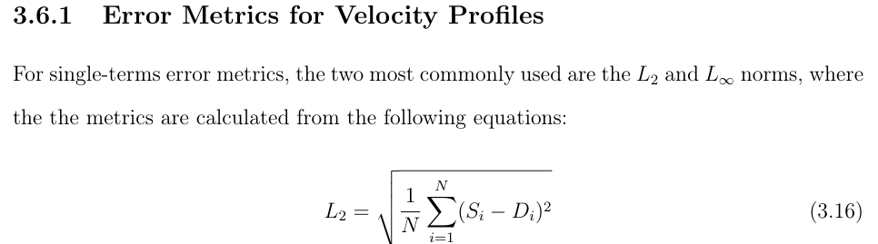
Eq 3.17: Maximum absolute discrepancy
PDF 45 · printed 31 · m/s or K
L_\infty=\max_i\lvert S_i-D_i\rvert
Attribution: Standard statistic
Use / caution: Use alongside signed bias and RMS; grid of comparison points matters.
Original PDF equation context
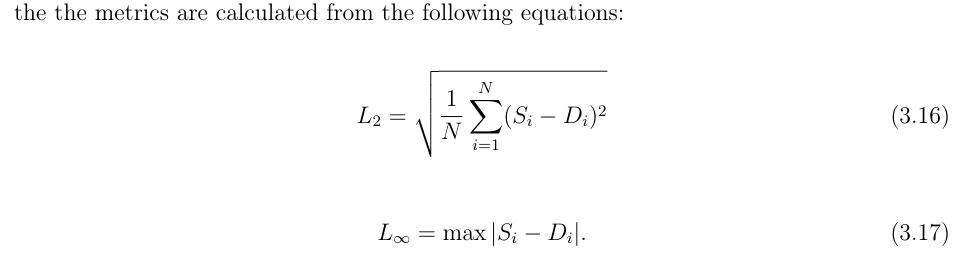
Eq 4.1: Air cooler duty, constant/mean cp
PDF 51 · printed 37 · W
Q=\dot m c_p(T_{out}-T_{in})Attribution: Experimental method from Reis [9]
Use / caution: With cp at midpoint it is an approximation to integral cp dT, often very good over this range.
Original PDF equation context
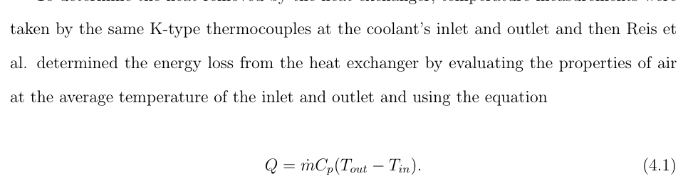
Eq 4.2: Legacy HITEC density
PDF 52 · printed 38 · kg/m^3; T in K
\rho=2293.6-0.7497T
Attribution: Reis/Janz [9,26]
Use / caution: Same density form retained in 5.15 and our model.
Original PDF equation context
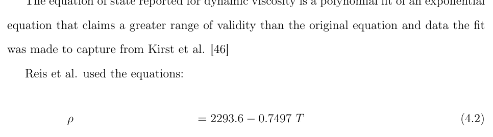
Eq 4.3: Legacy HITEC viscosity
PDF 52 · printed 38 · Pa s; T in K
\mu=0.4737-2.297\times10^{-3}T+3.731\times10^{-6}T^2-2.019\times10^{-9}T^3Attribution: Legacy property compilation/Reis [9,26,46]
Use / caution: Reconstruction-only branch; do not replace modern viscosity. Rounded appendix differs appreciably.
Original PDF equation context
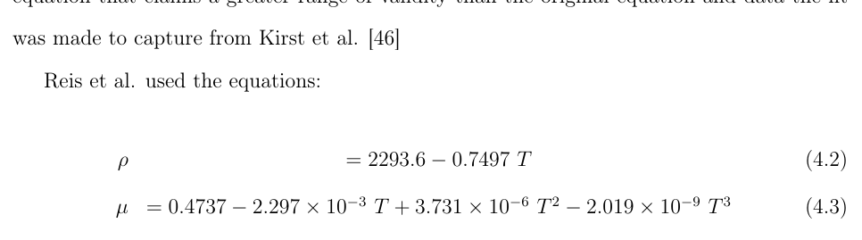
Eq 4.4: Legacy HITEC heat capacity
PDF 52 · printed 38 · J/(kg K); T in K
c_p=5806-10.833T+7.2413\times10^{-3}T^2Attribution: Legacy compilation/Reis [9,26,47]
Use / caution: Different cp package from our current 1423.47. Retain for explaining historical nondimensional values only.
Original PDF equation context
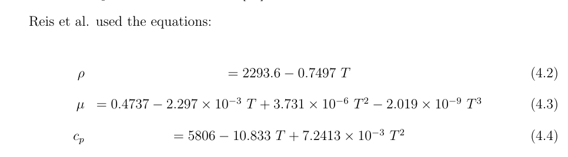
Eq 4.5: HITEC conductivity
PDF 52 · printed 38 · W/(m K); T in K
k=0.78-1.25\times10^{-3}T+1.6\times10^{-6}T^2Attribution: Reis/Santini [9,48]
Use / caution: Same as 5.18; exact coefficient provenance/range remains partly source-limited online.
Original PDF equation context
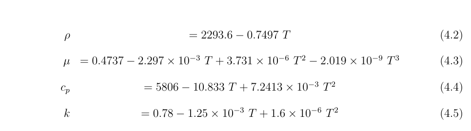
Eq 4.6: Net-heat uncertainty as printed
PDF 55 · printed 41 · W
\sigma_{Qnet}=Q_{net}\sqrt{(\sigma_{Qh}/Q_h)^2+(\sigma_{Qloss}/Q_{loss})^2}Attribution: Attributed to Reis Eq.25 [9]; Ethan reconstructs
Use / caution: Not standard independent propagation for difference Qh-Qloss. Correct absolute RSS is sqrt(sigma_Qh^2+sigma_Qloss^2), with covariance if correlated; use full measurement model for m cp DeltaT.
Original PDF equation context
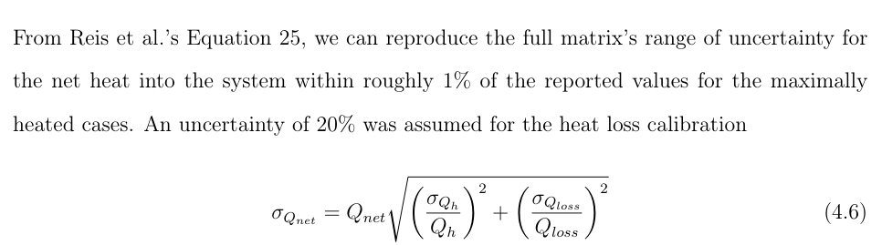
Eq 4.7: Heater-region energy estimate
PDF 55 · printed 41 · W
Q_{net}=\dot m c_p(TP6-TP2)Attribution: Experimental reduction [9]
Use / caution: Must match actual control volume, cp package and sensor/operator. Table4.4 DeltaT row differs from TableC.1 TP6-TP2.
Original PDF equation context
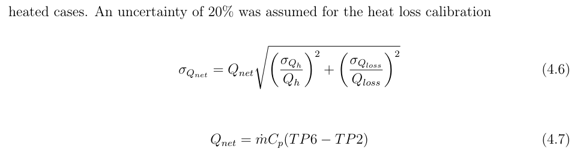
Eq 4.8: Residual inferred loss
PDF 56 · printed 42 · W
Q_{loss}=Q_h-Q_{net}Attribution: Energy accounting, Ethan reconstruction
Use / caution: Negative residual is a consistency diagnostic, not proof of unphysical experiment; propagated property/operator errors can cause it.
Original PDF equation context
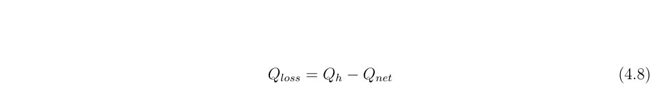
Eq 4.9: Axisymmetric PIV-to-area operator
PDF 57 · printed 43 · m/s
U_{PIV}=\frac{2}{R^2}\int_0^R U(r)r\,drAttribution: Ethan reconstructs experimental processing [9]
Use / caution: Axisymmetry and use of right-half profile are assumptions; not physical net transport in asymmetric recirculating 3D flow.
Original PDF equation context
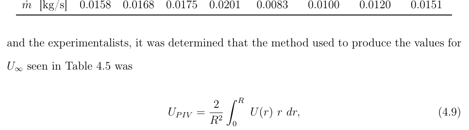
Eq 4.10: Test-section to pipe velocity conversion
PDF 57 · printed 43 · m/s
U_\infty=U_{PIV}(D_{test}/D_{pipe})^2Attribution: Continuity plus Ethan's reconstruction
Use / caution: Use signed net mass flux for runtime/ROM targets; keep experimental operator separate.
Original PDF equation context
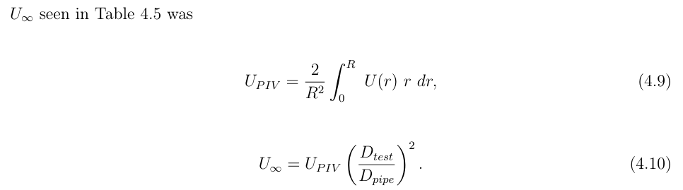
Eq 4.11: Assigned digitization uncertainty
PDF 60 · printed 46 · percent
u_{dig}=1.5\%Attribution: Ethan's salt-based reconstruction calibration
Use / caution: Global assigned RMSE bound, not pointwise guarantee: Table4.6 worst RMSE=3.65%, max discrepancy=14.10%.
Original PDF equation context
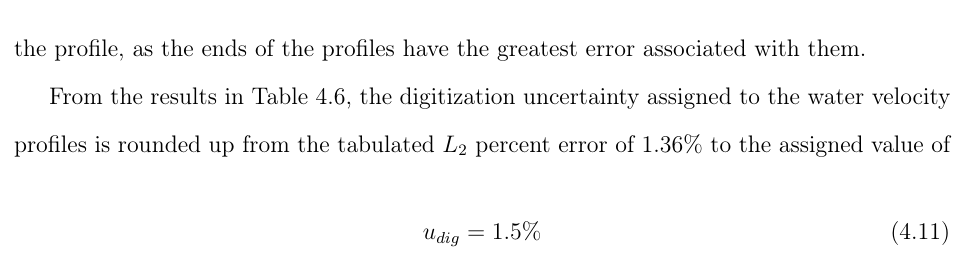
Eq 5.1: Vertical plate natural convection
PDF 67 · printed 53 · dimensionless
\overline{Nu}_L=\left[0.825+\frac{0.387Ra_L^{1/6}}{[1+(0.492/Pr)^{9/16}]^{8/27}}\right]^2Attribution: Churchill-Chu [49]
Use / caution: Uses air properties and characteristic L; vertical-cylinder curvature applicability must be checked.
Original PDF equation context
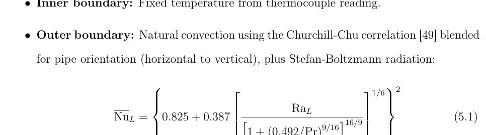
Eq 5.2: Horizontal-cylinder natural convection
PDF 67 · printed 53 · dimensionless
\overline{Nu}_D=\left[0.60+\frac{0.387Ra_D^{1/6}}{[1+(0.559/Pr)^{9/16}]^{8/27}}\right]^2Attribution: Churchill-Chu horizontal-cylinder paper; absent as separate [49] entry
Use / caution: Uses outer insulation diameter and air properties. Add correct horizontal-cylinder citation.
Original PDF equation context
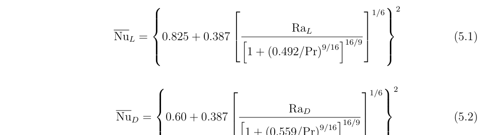
Eq 5.3: Nusselt-to-convection coefficient
PDF 67 · printed 53 · W/(m^2 K)
h_{ext}=\overline{Nu}_{eff}k/DAttribution: Definition
Use / caution: For vertical correlation h=Nu_L k/L; do not use D for a vertical Nu_L. Eq5.5's blend of h is safer than a blend of unequal-length Nu values.
Original PDF equation context
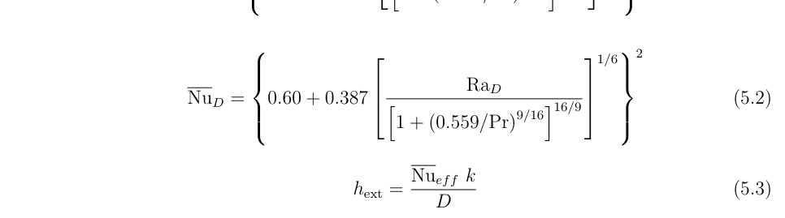
Eq 5.4: Outside convection plus radiation
PDF 67 · printed 53 · W/m^2 outer surface
q_{outer}=h_{ext}(T_s-T_\infty)+\epsilon\sigma(T_s^4-T_\infty^4)Attribution: Established heat transfer
Use / caution: Use absolute K in radiation; distinguish air temperature and radiative surroundings when available.
Original PDF equation context
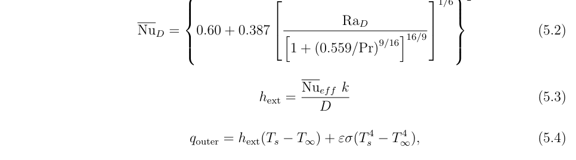
Eq 5.5: Orientation blend
PDF 68 · printed 54 · W/(m^2 K)
h_{eff}=(1-w)h_{horizontal}+wh_{vertical}Attribution: Ethan's engineering interpolation
Use / caution: w=sin(theta)^2 from horizontal. Not a validated inclined-cylinder law; test endpoints and sensitivity.
Original PDF equation context
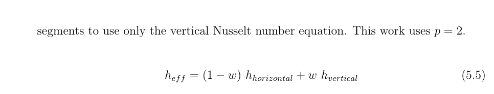
Eq 5.6: Cooler formula as printed - correction required
PDF 68 · printed 54 · W
Q_{cooler}=\dot m_{air}[c_p(T_{out})T_{out}-c_p(T_{in})T_{in}]Attribution: Ethan's stated implementation, not valid general enthalpy identity
Use / caution: Replace with mdot integral(cp dT). For AppendixB air cp, 25-to-113 C: printed formula +2.1408% vs integral; midpoint cp differs only -0.0292%.
Original PDF equation context
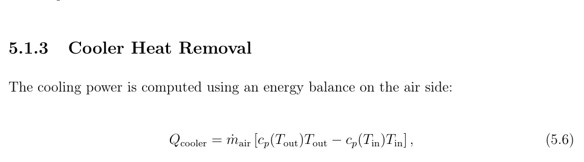
Eq 5.7: Global energy ledger
PDF 70 · printed 56 · W
Q_{heater}+Q_{test\ section}-Q_{cooler}-Q_{passive}-Q_{fins}=Q_{unaccounted}Attribution: Conservation; Ethan's component partition
Use / caution: Directly useful; keep prescribed electrical input separate from fluid-delivered heat and each loss category.
Original PDF equation context
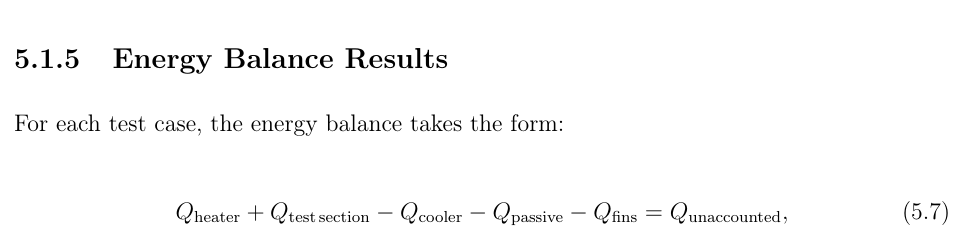
Eq 5.8: Variable-density mass conservation
PDF 71 · printed 57 · kg/(m^3 s)
\partial_t\rho+\nabla\cdot(\rho\mathbf U)=0
Attribution: Standard governing equation/OpenFOAM
Use / caution: Consistent with rho(T), not strictly constant-density divergence-free incompressibility.
Original PDF equation context
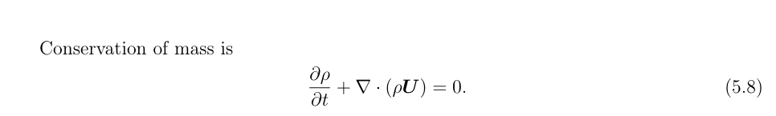
Eq 5.9: Buoyant-pressure momentum
PDF 71 · printed 57 · N/m^3
\partial_t(\rho\mathbf U)+\nabla\cdot(\rho\mathbf U\otimes\mathbf U)=-\nabla p_{rgh}-(\mathbf g\cdot\mathbf r)\nabla\rho+\nabla\cdot\tau_{eff}Attribution: Standard pressure transformation/OpenFOAM
Use / caution: Reconstruct physical p before pressure-loss reduction; audit g/position reference and signs.
Original PDF equation context
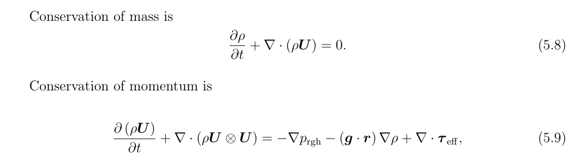
Eq 5.10: Pressure decomposition
PDF 71 · printed 57 · Pa
p_{rgh}=p-\rho\mathbf g\cdot\mathbf rAttribution: OpenFOAM convention
Use / caution: Use our actual xref/ghRef; do not compare p_rgh directly with physical static pressure.
Original PDF equation context
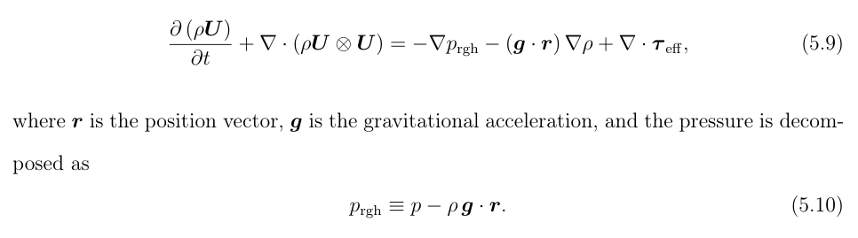
Eq 5.11: Variable-viscosity effective stress
PDF 71 · printed 57 · Pa
\tau_{eff}=\mu_{eff}[\nabla\mathbf U+(\nabla\mathbf U)^T-\frac23(\nabla\cdot\mathbf U)\mathbf I],\quad\mu_{eff}=\mu+\mu_tAttribution: Newtonian/RANS constitutive law
Use / caution: Our laminar cases set mu_t=0; do not silently introduce turbulence.
Original PDF equation context
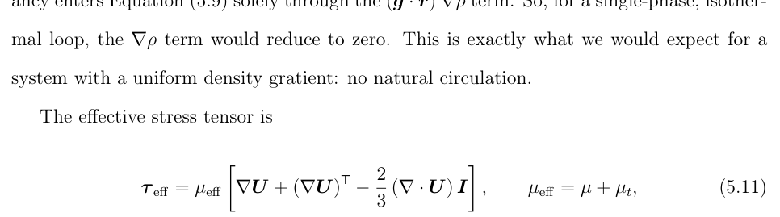
Eq 5.12: Enthalpy/kinetic energy equation
PDF 71 · printed 57 · W/m^3
\partial_t(\rho h)+\nabla\cdot(\rho\mathbf U h)+\partial_t(\rho K)+\nabla\cdot(\rho\mathbf U K)-\partial_t p=\nabla\cdot(\alpha_{eff}\nabla h)+\rho\mathbf U\cdot\mathbf gAttribution: OpenFOAM-style equation
Use / caution: Check actual solver source/version and h vs internal-energy selection; not a direct ROM equation replacement.
Original PDF equation context
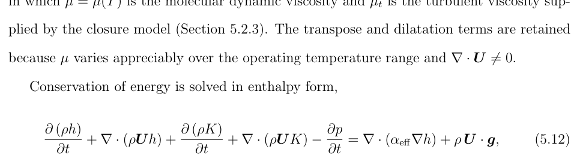
Eq 5.13: Enthalpy diffusion coefficient
PDF 71 · printed 57 · kg/(m s), not m^2/s
\alpha_{eff}=\mu/Pr+\mu_t/Pr_tAttribution: OpenFOAM transport model convention
Use / caution: For molecular part alpha_eff=k/cp. Distinguish this dynamic diffusivity from kinematic thermal diffusivity k/(rho cp).
Original PDF equation context
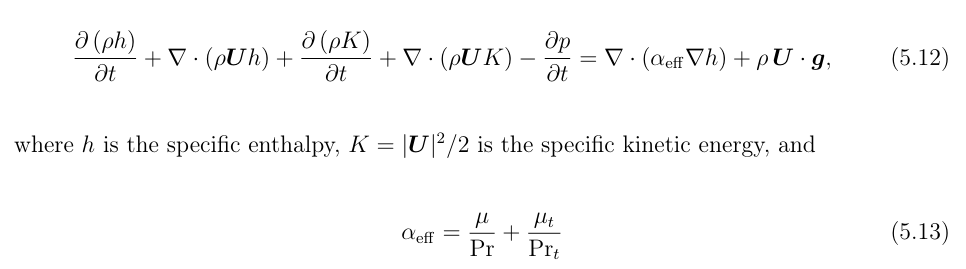
Eq 5.14: Polynomial density model
PDF 72 · printed 58 · kg/m^3
\rho(T)=\sum_{i=0}^{N}a_iT^iAttribution: OpenFOAM icoPolynomial
Use / caution: Use actual exported coefficients, interpolation and valid temperature range.
Original PDF equation context
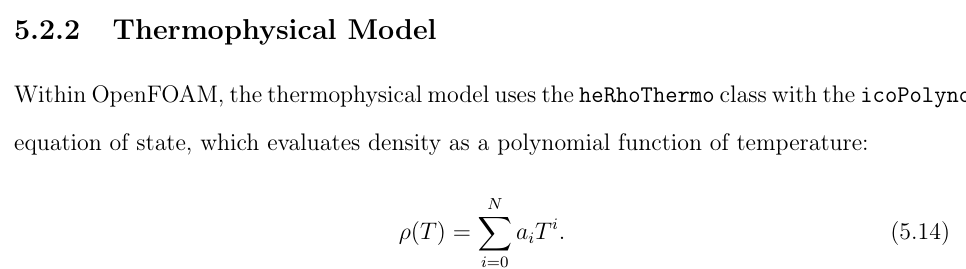
Eq 5.15: Current HITEC density
PDF 72 · printed 58 · kg/m^3; T in K
\rho=2293.6-0.7497T
Attribution: Janz [26], as cited by Ethan
Use / caution: Our formula matches; PDF p54 nominal temperature has Celsius-to-Kelvin typo.
Original PDF equation context
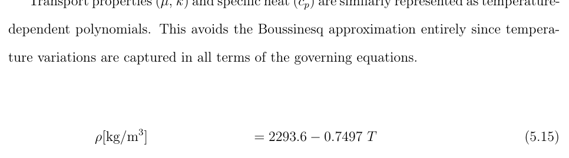
Eq 5.16: Modern HITEC viscosity
PDF 72 · printed 58 · Pa s; T in K
\mu=1.149\times10^{-3}\exp(-810.896/T+7.806\times10^5/T^2)Attribution: Jin et al. [50]
Use / caution: Our formula matches; publisher confirms study/2.5% uncertainty, exact fitted coefficients not independently accessible online.
Original PDF equation context
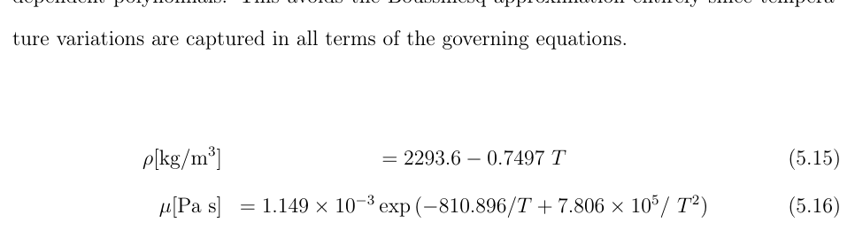
Eq 5.17: Modern HITEC constant cp
PDF 72 · printed 58 · J/(kg K)
c_p\approx1423.47
Attribution: Parida-Basu [51], base salt measurement
Use / caution: Primary article reports 1.42347 J/(g K), confirming unit conversion; +/-4% is Ethan's inferred range, not a measured standard uncertainty.
Original PDF equation context
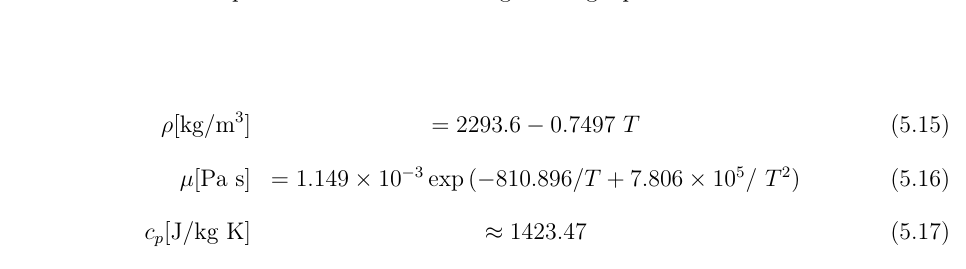
Eq 5.18: Current HITEC conductivity
PDF 72 · printed 58 · W/(m K); T in K
k=0.78-1.25\times10^{-3}T+1.6\times10^{-6}T^2Attribution: Santini [48], as cited
Use / caution: Same as4.5. Correct cited year to1984; exact validity and uncertainty need source verification.
Original PDF equation context
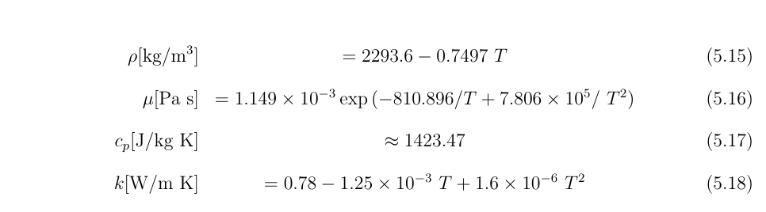
Eq 5.19: Buoyant turbulence production
PDF 74 · printed 60 · W/m^3 if volumetric rho-k equation
G_b=-C_g\nu_t(\mathbf g\cdot\nabla\rho),\quad C_g=1/Pr_t=1
Attribution: Ethan custom codedFvModel
Use / caution: Check source normalization; divide rho for a per-mass k equation. Fixed Pr_t=1 is a modeling choice. Not justified for current laminar ROM by this expression alone.
Original PDF equation context
Eq 5.20: Wall-grading cell count
PDF 75 · printed 61 · integer
n=\left\lfloor\frac{\ln(\Delta_{bulk}/\Delta_1)}{\ln r_{exp}}\right\rfloor+1Attribution: Ethan meshing implementation
Use / caution: Confirm floor operation and degenerate rexp=1; preserve realized mesh metrics.
Original PDF equation context
Eq 5.21: Graded-layer thickness
PDF 75 · printed 61 · m
\delta_{BL}=\Delta_1\frac{r_{exp}^{n}-1}{r_{exp}-1}Attribution: Geometric series
Use / caution: Handle rexp=1 limit n Delta1; not measured hydrodynamic boundary layer thickness.
Original PDF equation context
Eq 5.22: O-grid core fraction
PDF 75 · printed 61 · dimensionless
core\_ratio=1-\delta_{BL}/R_{pipe}Attribution: Ethan meshing implementation
Use / caution: Require 0<core_ratio<1; not a physical closure.
Original PDF equation context
Eq 5.23: Cylindrical resistance normalized to inner area
PDF 77 · printed 63 · m^2 K/W
R_{ps}=\sum_{i=1}^{N}\frac{r_0\ln(r_i/r_{i-1})}{k_i}Attribution: Classical conduction; Ethan BC implementation
Use / caution: Essential area normalization; our model already has annular resistance. Variable k layers require integral-consistent discretization.
Original PDF equation context
Eq 5.24: Outside loss referred to inner wall
PDF 77 · printed 63 · W/m^2 inner surface
q_{out}=\frac{A_{outer}}{A_{inner}}[h_{ext}(T_s-T_a)+\epsilon\sigma(T_s^4-T_{sur}^4)]Attribution: Conservation/geometry; Ethan BC
Use / caution: Aout/Ain=rout/r0 for equal axial length. Source names qout but uses inner-area basis.
Original PDF equation context
Eq 5.25: Nonlinear wall closure
PDF 77 · printed 63 · W/m^2 inner surface
(T_p-T_s)/R_{ps}=q_{out}Attribution: Classical heat balance; Ethan BC
Use / caution: Tp must be fluid-side wall temperature unless internal film resistance is explicitly included. Add layer electrical sources with correct partition, not only this source-free form.
Original PDF equation context
Eq 6.1: Verification hydrodynamic entry estimate
PDF 87 · printed 73 · m
L_h\approx0.05ReD=0.334\,m
Attribution: Standard straight-tube estimate; Ethan calculation
Use / caution: Correct arithmetic for Re334,D0.02m. Approximate criterion, not proof in junction-rich loop.
Original PDF equation context
Eq 6.2: Verification thermal entry estimate
PDF 87 · printed 73 · m
L_t\approx0.05RePrD=17.8\,m
Attribution: Standard straight-tube estimate; Ethan calculation
Use / caution: Correct arithmetic; constant-property verification case uses legacy cp and Pr53.2, not modern operating salt cp.
Original PDF equation context
Eq 6.3: Area-normalized verification heat flow
PDF 87 · printed 73 · W
Q=(T_{amb}-T_f)A_{inner}/(R_{int}+R_{ps}+R_{ext})Attribution: Classical resistance network; Ethan application
Use / caution: Same sign convention as3.12. Reference is correlation-based for internal film, not exact analytic full PDE solution.
Original PDF equation context
Eq B.1: Generic property polynomial
PDF 125 · printed 111 · Property-dependent; T in K
\phi(T)=\sum_{i=0}^{N}a_iT^iAttribution: Standard representation
Use / caution: Tables B1,B2,B4 are coefficient sets, included as separate unnumbered equation groups; do not silently use legacy B1 over current5.15-18.
Original PDF equation context
Unnumbered equations and coefficient sets
| id | pdf page | printed page | section | formula | priority | use and cautions |
|---|
| U01 | 15 | 1 | Nomenclature | Gr=g beta DeltaT L^3/nu^2; Nu=hD/k; Pr=nu/alpha=mu cp/k; Ra=Gr Pr; Re=rho U D/mu; Ri=Gr/Re^2 | A | Use consistent characteristic length and reference/local temperatures; preserve all6 definitions. |
| U02 | 25 | 11 | 2.1 | beta=-(1/rho0)(partial rho/partial T)_p | A | Thermal-expansion definition; our model already uses local form. |
| U03 | 26 | 12 | 2.1 | Lh~0.03 Re_D D; Lt~0.043 Re_D Pr D | B | 5%development estimates; differs from0.05 coefficient for99%criterion on PDF41/87. |
| U04 | 36 | 22 | 3.2 | h1<h2<h3; r21=h2/h1; r32=h3/h2 | A | Mesh ordering conventions used throughoutGCI. |
| U05 | 38 | 24 | 3.3.1 | R=epsilon21/epsilon32;0<R<1monotonic,R<0oscillatory,R>1divergent | A | DegenerateR=0/1 and noisy cases require special handling; two-grid data cannot evaluate thisR. |
| U06 | 41 | 27 | 3.4.1 | Lh~0.05 Re D=334mm;Lt~0.05 Re Pr D=17.8m | B | Repeated numbered6.1/6.2; verification geometry only. |
| U07 | 52 | 38 | 4.3.1 | cp(200C)~2301legacy vs1423.47modern J/(kgK) | A | Consistent only at473.15K; not493.15K as PDF54 incorrectly states. |
| U08 | 53 | 39 | 4.3.1 | T[K]=mean(TP[C])+273 vs+273.15 | A | Historical inference that+273reproducedPrlabels; do not adopt273conversion in our solver. |
| U09 | 67 | 53 | 5.1.2 | w=(sin theta)^p; p=2 | B | Heuristic blend withtheta measured from horizontal. |
| U10 | 68 | 54 | 5.1.2 | k_face=2 k_L k_R/(k_L+k_R) | A | Equal-distance harmonic mean only; unequal half-cell distances need resistance weights; cylindrical areas vary. |
| U11 | 68 | 54 | 5.1.2 | relaxation=0.5;deltaTs<1e-3K;deltaq<1e-2W/m2 | B | Iteration stopping parameters, not universal accuracy guarantees. |
| U12 | 71 | 57 | 5.2.1 | K=abs(U)^2/2 | B | Specific kineticenergy m2/s2 in Eq5.12. |
| U13 | 73 | 59 | 5.2.3 | Re_critical~2300; RaL~1e10transition argument | C | Reference pipe threshold/context only; globalRa is not a universal loop transition criterion. |
| U14 | 77 | 63 | 5.4.2 | Aouter/Ainner=router/r0 | A | Equal axial lengths; essentialheat-flux normalization. |
| U15 | 80 | 66 | 5.5.4 | g=(0,-9.81,0)m/s2 | A | Coordinates and sign matter for physical pressure andbuoyancy. |
| U16 | 81 | 67 | 5.7 | u=a/sqrt(3) for rectangular half-width a | A | NISTW4confirms; standard uncertainty, not expansion factor. |
| U17 | 83 | 69 | 5.7 | Q=mdot cp DeltaT | A | Used for uncertainty propagation; use primitive measurements/covariance; not universal transient balance. |
| U18 | 84 | 70 | 5.7 | U=mdot/(rho A) | A | Net transport relation only if operators/reference density compatible; uncertainty not generally identical between U and mdot. |
| U19 | 93 | 79 | 6.2 | Fs=3 fortwo-gridGCI | A | Assumedp stillrequired; no observed order from two-grids; full procedure verification source-limited. |
| U20 | 125 | 111 | B.1/TableB.1 | rho=2293.6-0.7497T;cp=5806-10.83T+7.24e-3T^2;mu=0.4737-2.30e-3T+3.73e-6T^2-2.02e-9T^3;k=0.7800-1.25e-3T+1.60e-6T^2 | A | Verbatim appendix coefficients; conflict withmain modern suite and even rounded legacy viscosity. T[K]; SIunits. Preserve as conflict, not runnable default. |
| U21 | 126 | 112 | B.2 | water rho(T)=sum(a_i*T^i), a_i lowest degree first: [-5177.3045575, 87.247110819, -0.49471595337, 0.0014140506497, -2.0407934727e-06, 1.1832216776e-09] | B | T[K];rho[kg/m3],cp[J/(kgK)],mu[Pa s],k[W/(mK)]. Source coefficient transcription; verify frompage image before execution. Air valid range not given; water fit reported1-99C withaccuracy varying by property. |
| U22 | 126 | 112 | B.2 | water cp(T)=sum(a_i*T^i), a_i lowest degree first: [156198.60715, -2209.44267, 12.827544568, -0.037185937665, 5.3810013455e-05, -3.1070889884e-08] | B | T[K];rho[kg/m3],cp[J/(kgK)],mu[Pa s],k[W/(mK)]. Source coefficient transcription; verify frompage image before execution. Air valid range not given; water fit reported1-99C withaccuracy varying by property. |
| U23 | 126 | 112 | B.2 | water mu(T)=sum(a_i*T^i), a_i lowest degree first: [26.995183059, -0.56139378194, 0.0050098770493, -2.4857792888e-05, 7.4037293721e-08, -1.3233646643e-10, 1.3141307983e-13, -5.5918253069e-17] | B | T[K];rho[kg/m3],cp[J/(kgK)],mu[Pa s],k[W/(mK)]. Source coefficient transcription; verify frompage image before execution. Air valid range not given; water fit reported1-99C withaccuracy varying by property. |
| U24 | 126 | 112 | B.2 | water k(T)=sum(a_i*T^i), a_i lowest degree first: [-24.404864949, 0.36145817422, -0.00213161441, 6.3692716003e-06, -9.5750038555e-09, 5.7652097967e-12] | B | T[K];rho[kg/m3],cp[J/(kgK)],mu[Pa s],k[W/(mK)]. Source coefficient transcription; verify frompage image before execution. Air valid range not given; water fit reported1-99C withaccuracy varying by property. |
| U25 | 127 | 113 | B.3 | air rho(T)=sum(a_i*T^i), a_i lowest degree first: [12.6135, -0.188335821, 0.00153647483, -7.50628889e-06, 2.25462898e-08, -4.07792011e-11, 4.07273312e-14, -1.72457268e-17] | A | T[K];rho[kg/m3],cp[J/(kgK)],mu[Pa s],k[W/(mK)]. Source coefficient transcription; verify frompage image before execution. Air valid range not given; water fit reported1-99C withaccuracy varying by property. |
| U26 | 127 | 113 | B.3 | air cp(T)=sum(a_i*T^i), a_i lowest degree first: [1061.3, -0.43282, 0.0010234, -6.4747e-07, 1.3864e-10] | A | T[K];rho[kg/m3],cp[J/(kgK)],mu[Pa s],k[W/(mK)]. Source coefficient transcription; verify frompage image before execution. Air valid range not given; water fit reported1-99C withaccuracy varying by property. |
| U27 | 127 | 113 | B.3 | air mu(T)=sum(a_i*T^i), a_i lowest degree first: [-1.00720691e-06, 8.68086991e-08, -6.05834048e-11, -2.54175106e-13, 1.31589328e-15, -2.81111782e-18, 3.02364353e-21, -1.33124028e-24] | A | T[K];rho[kg/m3],cp[J/(kgK)],mu[Pa s],k[W/(mK)]. Source coefficient transcription; verify frompage image before execution. Air valid range not given; water fit reported1-99C withaccuracy varying by property. |
| U28 | 127 | 113 | B.3 | air k(T)=sum(a_i*T^i), a_i lowest degree first: [-0.00108985426, 8.52747829e-05, 2.11440737e-07, -1.44017702e-09, 4.40669556e-12, -7.79383878e-15, 7.57715631e-18, -3.1313899e-21] | A | T[K];rho[kg/m3],cp[J/(kgK)],mu[Pa s],k[W/(mK)]. Source coefficient transcription; verify frompage image before execution. Air valid range not given; water fit reported1-99C withaccuracy varying by property. |
| U29 | 127 | 113 | B.4/TableB.5 | SS316 k16.3,quartz k1.4,Al k237W/(mK);epsilonSS.25,ins.95,quartz.95,Al.15 | A | Fixed properties are not ourcurrentSS316L/insulation basis;Alepsilon differsfromTable5.1value.10. |
| U30 | 128 | 114 | B.4 | k_ins(T)=6.421e-2-1.959e-4T+3.929e-7T^2 [W/(mK)] | A | First displayedfit; manufacturer Cerablanket64, extrapolated near room temperature. Does notmatchours. |
| U31 | 128 | 114 | B.4 | k(T)=6.4209E-0.2-1.9593E-04T+3.9286E-07T^2 [as printed] | A | Malformed duplicated notation; likelyintended constant 6.4209e-2. Do not silently correct as verified manufacturer data. |